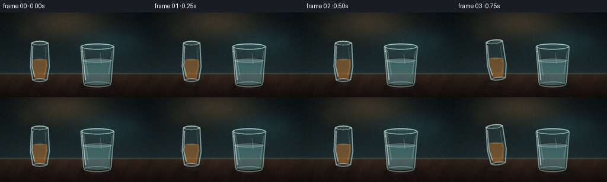
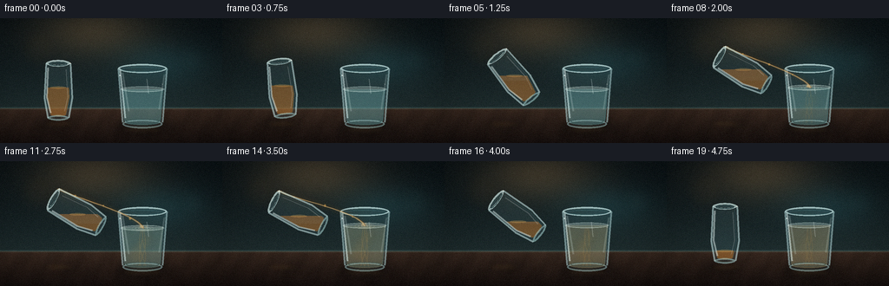
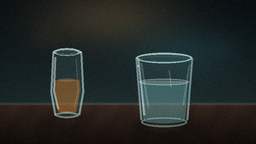
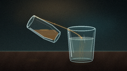
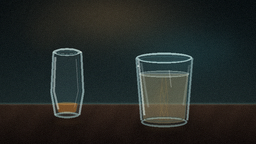

CODING AGENTS AS PIXEL WORLD MODELS
traex/DeepSeek-V4.1-Flash · phygen_138
点击播放 · 原生 RGB 像素
逐轮保存的候选
回放视频、检查图与代码变化。
每份候选均可单独播放。实际图片检查记录在下方工具轨迹中。
候选 01播放与检查图
点击播放 · 原生 RGB 像素


展开代码变化
--- 上一保存版本
+++ 本次保存版本
@@ -0,0 +1,519 @@
+from pathlib import Path
+import math
+
+import numpy as np
+from PIL import Image, ImageChops, ImageDraw, ImageFilter
+
+import artifact_io
+
+
+W, H, N, FPS = 256, 144, 20, 4.0
+S = 3
+OW, OH = W * S, H * S
+CASE = Path(__file__).resolve().parent
+
+
+def mix(a, b, t):
+ return tuple(int(round(x + (y - x) * t)) for x, y in zip(a, b))
+
+
+def smooth(t):
+ t = max(0.0, min(1.0, t))
+ return t * t * (3.0 - 2.0 * t)
+
+
+def rgba_layer():
+ return Image.new("RGBA", (OW, OH), (0, 0, 0, 0))
+
+
+def scaled(points):
+ return [(float(x) * S, float(y) * S) for x, y in points]
+
+
+def ellipse_points(cx, cy, rx, ry, count=56, angle=0.0):
+ a = math.radians(angle)
+ ca, sa = math.cos(a), math.sin(a)
+ out = []
+ for k in range(count):
+ q = math.tau * k / count
+ x, y = rx * math.cos(q), ry * math.sin(q)
+ out.append((cx + x * ca - y * sa, cy + x * sa + y * ca))
+ return out
+
+
+def rotated_points(local_points, cx, cy, angle):
+ a = math.radians(angle)
+ ca, sa = math.cos(a), math.sin(a)
+ return [(cx + x * ca - y * sa, cy + x * sa + y * ca) for x, y in local_points]
+
+
+def draw_poly(layer, points, fill, outline=None, width=1):
+ ImageDraw.Draw(layer).polygon(scaled(points), fill=fill, outline=outline, width=max(1, int(width * S)))
+
+
+def draw_line(layer, points, fill, width=1, joint="curve"):
+ ImageDraw.Draw(layer).line(scaled(points), fill=fill, width=max(1, int(width * S)), joint=joint)
+
+
+def draw_ellipse(layer, center, radii, fill=None, outline=None, width=1):
+ cx, cy = center
+ rx, ry = radii
+ box = [(cx - rx) * S, (cy - ry) * S, (cx + rx) * S, (cy + ry) * S]
+ ImageDraw.Draw(layer).ellipse(box, fill=fill, outline=outline, width=max(1, int(width * S)))
+
+
+def mask_polygon(points):
+ mask = Image.new("L", (OW, OH), 0)
+ ImageDraw.Draw(mask).polygon(scaled(points), fill=255)
+ return mask
+
+
+def mask_ellipse(center, radii):
+ mask = Image.new("L", (OW, OH), 0)
+ draw_ellipse(mask, center, radii, fill=255)
+ return mask
+
+
+def union_masks(*masks):
+ out = masks[0].copy()
+ for mask in masks[1:]:
+ out = ImageChops.lighter(out, mask)
+ return out
+
+
+def intersection(*masks):
+ out = masks[0].copy()
+ for mask in masks[1:]:
+ out = ImageChops.multiply(out, mask)
+ return out
+
+
+def half_plane_mask(y):
+ mask = Image.new("L", (OW, OH), 0)
+ ImageDraw.Draw(mask).rectangle([0, int(y * S), OW, OH], fill=255)
+ return mask
+
+
+def fill_mask(mask, color, opacity=255, gradient=None):
+ arr = np.zeros((OH, OW, 4), dtype=np.uint8)
+ arr[:, :, 0] = color[0]
+ arr[:, :, 1] = color[1]
+ arr[:, :, 2] = color[2]
+ alpha = np.asarray(mask, dtype=np.float32) * (opacity / 255.0)
+ if gradient is not None:
+ yy = np.arange(OH, dtype=np.float32)[:, None] / max(1, OH - 1)
+ strength, dark, light = gradient
+ factor = (1.0 + strength * (yy - 0.5))[:, :, None]
+ arr[:, :, :3] = np.clip(arr[:, :, :3] * factor, 0, 255).astype(np.uint8)
+ top = np.broadcast_to(yy < 0.5, (OH, OW))[:, :, None]
+ arr[:, :, :3] = np.where(
+ top,
+ arr[:, :, :3] * (1 - dark) + light * dark,
+ arr[:, :, :3],
+ )
+ arr[:, :, 3] = alpha.astype(np.uint8)
+ return Image.fromarray(arr, "RGBA")
+
+
+def blurred_layer(layer, radius):
+ return layer.filter(ImageFilter.GaussianBlur(radius * S))
+
+
+def add_shadow(base, center, radii, alpha=100, blur=7):
+ layer = rgba_layer()
+ draw_ellipse(layer, center, radii, fill=(5, 7, 8, alpha))
+ return Image.alpha_composite(base, blurred_layer(layer, blur))
+
+
+def background():
+ yy, xx = np.mgrid[0:OH, 0:OW].astype(np.float32)
+ xn = xx / max(1, OW - 1)
+ yn = yy / max(1, OH - 1)
+ table_y = 104.0 / H
+
+ wall_top = np.array([12, 20, 23], dtype=np.float32)
+ wall_bottom = np.array([31, 45, 46], dtype=np.float32)
+ wall_t = np.clip(yn / table_y, 0, 1) ** 1.45
+ wall = wall_top[None, None, :] * (1 - wall_t[:, :, None]) + wall_bottom[None, None, :] * wall_t[:, :, None]
+
+ warm = np.exp(-(((xn - 0.42) / 0.38) ** 2 + ((yn - 0.10) / 0.30) ** 2) * 2.0)
+ cool = np.exp(-(((xn - 0.72) / 0.30) ** 2 + ((yn - 0.36) / 0.26) ** 2) * 2.2)
+ wall += warm[:, :, None] * np.array([46, 32, 17], dtype=np.float32)
+ wall += cool[:, :, None] * np.array([7, 20, 22], dtype=np.float32)
+
+ wood_top = np.array([58, 42, 33], dtype=np.float32)
+ wood_bottom = np.array([24, 17, 15], dtype=np.float32)
+ wood_t = np.clip((yn - table_y) / (1 - table_y), 0, 1)
+ wood = wood_top[None, None, :] * (1 - wood_t[:, :, None]) + wood_bottom[None, None, :] * wood_t[:, :, None]
+ grain = 0.5 + 0.5 * np.sin(xx * 0.065 + 2.1 * np.sin(yy * 0.035) + 0.8)
+ grain2 = 0.5 + 0.5 * np.sin(xx * 0.17 + yy * 0.06)
+ wood *= (0.90 + 0.10 * grain[:, :, None]) * (0.96 + 0.04 * grain2[:, :, None])
+ wood += warm[:, :, None] * np.array([16, 10, 4], dtype=np.float32)
+
+ table_mask = (yn >= table_y)[:, :, None]
+ image = wall * (1 - table_mask) + wood * table_mask
+
+ horizon = np.exp(-((yn - table_y) / 0.008) ** 2)
+ image += horizon[:, :, None] * np.array([23, 31, 28], dtype=np.float32)
+
+ r = np.sqrt((xn - 0.5) ** 2 * 1.2 + (yn - 0.5) ** 2)
+ vignette = np.clip(1.0 - 0.52 * np.maximum(0, r - 0.24) ** 1.6, 0.48, 1.0)
+ image *= vignette[:, :, None]
+ image = np.clip(image, 0, 255).astype(np.uint8)
+ base = Image.fromarray(image, "RGB").convert("RGBA")
+
+ glow = rgba_layer()
+ d = ImageDraw.Draw(glow)
+ for cx, cy, rx, ry, color in [
+ (44, 35, 20, 20, (126, 87, 43, 16)),
+ (222, 47, 16, 16, (67, 123, 123, 13)),
+ (196, 27, 8, 8, (168, 122, 64, 10)),
+ (83, 23, 5, 5, (180, 134, 74, 12)),
+ ]:
+ d.ellipse([(cx - rx) * S, (cy - ry) * S, (cx + rx) * S, (cy + ry) * S], fill=color)
+ return Image.alpha_composite(base, blurred_layer(glow, 7))
+
+
+RECEIVER = {
+ "cx": 164.0,
+ "top": 58.0,
+ "bottom": 123.0,
+ "top_half": 28.0,
+ "bottom_half": 23.0,
+}
+
+
+def receiver_shapes():
+ cx = RECEIVER["cx"]
+ top = RECEIVER["top"]
+ bottom = RECEIVER["bottom"]
+ tw = RECEIVER["top_half"]
+ bw = RECEIVER["bottom_half"]
+ outer = [(cx - tw, top), (cx - bw - 1, bottom - 4), (cx - bw + 2, bottom), (cx + bw - 2, bottom), (cx + bw + 1, bottom - 4), (cx + tw, top)]
+ inner = [(cx - tw + 3, top + 2), (cx - bw + 2, bottom - 5), (cx - bw + 4, bottom - 2), (cx + bw - 4, bottom - 2), (cx + bw - 2, bottom - 5), (cx + tw - 3, top + 2)]
+ outer_mask = union_masks(mask_polygon(outer), mask_ellipse((cx, top), (tw, 5.3)), mask_ellipse((cx, bottom - 1), (bw, 5.2)))
+ inner_mask = union_masks(mask_polygon(inner), mask_ellipse((cx, top + 2), (tw - 3, 3.5)), mask_ellipse((cx, bottom - 3), (bw - 3, 3.0)))
+ return outer, inner, outer_mask, inner_mask
+
+
+def draw_receiver(base, level, tint_mix, plume_strength, frame_t):
+ cx = RECEIVER["cx"]
+ top = RECEIVER["top"]
+ bottom = RECEIVER["bottom"]
+ tw = RECEIVER["top_half"]
+ bw = RECEIVER["bottom_half"]
+ outer, inner, outer_mask, inner_mask = receiver_shapes()
+
+ base = add_shadow(base, (cx + 2, bottom + 2), (35, 8), alpha=112, blur=6)
+
+ glass_tint = fill_mask(outer_mask, (142, 205, 214), opacity=22)
+ base = Image.alpha_composite(base, glass_tint)
+
+ back_rim = rgba_layer()
+ draw_ellipse(back_rim, (cx, top), (tw, 5.3), fill=(80, 130, 137, 22), outline=(186, 232, 235, 72), width=1)
+ base = Image.alpha_composite(base, back_rim)
+
+ water = (
+ int(round(101 + (179 - 101) * tint_mix)),
+ int(round(158 + (132 - 158) * tint_mix)),
+ int(round(159 + (73 - 159) * tint_mix)),
+ )
+ liquid_mask = intersection(inner_mask, half_plane_mask(level))
+ liquid = fill_mask(liquid_mask, water, opacity=104, gradient=(0.22, 0.06, 222))
+ base = Image.alpha_composite(base, liquid)
+
+ if plume_strength > 0:
+ plume = rgba_layer()
+ pd = ImageDraw.Draw(plume)
+ for k in range(5):
+ phase = frame_t * 2.3 + k * 1.17
+ py = level + 6 + k * 8.1 + 2.0 * math.sin(phase)
+ px = cx + 1 + (5.0 + k * 1.1) * math.sin(phase * 0.78 + 0.6)
+ rx = 5.0 + k * 1.4
+ ry = 3.8 + k * 0.7
+ alpha = int((16 + 28 * plume_strength) * (1.0 - 0.10 * k))
+ pd.ellipse([(px - rx) * S, (py - ry) * S, (px + rx) * S, (py + ry) * S], fill=(187, 130, 55, alpha))
+ plume = blurred_layer(plume, 4.5)
+ plume.putalpha(ImageChops.multiply(plume.getchannel("A"), liquid_mask))
+ base = Image.alpha_composite(base, plume)
+
+ wisps = rgba_layer()
+ wd = ImageDraw.Draw(wisps)
+ for k in range(4):
+ phase = frame_t * 2.1 + k * 1.6
+ x0 = cx + 2 * math.sin(phase)
+ y0 = level + 3
+ pts = []
+ for j in range(7):
+ q = j / 6.0
+ pts.append(((x0 + 6.5 * math.sin(phase + q * 3.1) * q) * S, (y0 + q * (bottom - level - 5)) * S))
+ wd.line(pts, fill=(208, 157, 79, int(16 + 18 * plume_strength)), width=max(1, S))
+ wisps.putalpha(ImageChops.multiply(wisps.getchannel("A"), liquid_mask))
+ base = Image.alpha_composite(base, wisps)
+
+ surface = rgba_layer()
+ draw_ellipse(surface, (cx, level), (bw + 2, 3.1), fill=(204, 231, 222, 42), outline=(226, 247, 238, 112), width=1)
+ draw_line(surface, [(cx - bw - 1, level), (cx - 10, level - 1.0), (cx + 8, level - 0.5), (cx + bw + 1, level)], (239, 253, 244, 105), width=1)
+ base = Image.alpha_composite(base, surface)
+
+ front = rgba_layer()
+ fd = ImageDraw.Draw(front)
+ for side in (-1, 1):
+ x_top = cx + side * tw
+ x_bottom = cx + side * bw
+ fd.line([(x_top * S, top * S), (x_bottom * S, (bottom - 3) * S)], fill=(199, 237, 238, 116), width=2 * S)
+ fd.line([((x_top - side * 2.0) * S, (top + 3) * S), ((x_bottom - side * 2.2) * S, (bottom - 5) * S)], fill=(53, 96, 100, 85), width=S)
+
+ for pts, color, width in [
+ ([(cx - tw + 2, top), (cx - bw + 3, bottom - 8)], (233, 253, 252, 128), 2),
+ ([(cx - tw + 5, top + 5), (cx - bw + 7, bottom - 16)], (230, 251, 248, 48), 2),
+ ([(cx + tw - 3, top + 7), (cx + bw - 4, bottom - 18)], (226, 248, 244, 42), 2),
+ ([(cx + 5, top + 12), (cx + 7, top + 29)], (245, 255, 252, 58), 1),
+ ]:
+ draw_line(front, pts, color, width=width)
+
+ draw_ellipse(front, (cx, top), (tw, 5.3), outline=(216, 246, 244, 155), width=2)
+ draw_ellipse(front, (cx, top + 1), (tw - 4, 2.9), outline=(64, 108, 112, 115), width=1)
+ draw_ellipse(front, (cx, bottom - 1), (bw, 5.2), outline=(181, 225, 224, 105), width=2)
+ draw_ellipse(front, (cx, bottom - 4), (bw - 4, 2.6), outline=(45, 80, 83, 82), width=1)
+
+ sparkle = rgba_layer()
+ sd = ImageDraw.Draw(sparkle)
+ sd.ellipse([(cx - tw + 2) * S - 2, (top + 8) * S - 2, (cx - tw + 2) * S + 2, (top + 8) * S + 2], fill=(255, 255, 245, 190))
+ sd.ellipse([(cx + tw - 5) * S - 1, (top + 18) * S - 1, (cx + tw - 5) * S + 1, (top + 18) * S + 1], fill=(255, 255, 250, 150))
+ base = Image.alpha_composite(base, sparkle)
+ return Image.alpha_composite(base, front)
+
+
+POUR_LOCAL = {
+ "outer": [(-14, -32), (-16, 8), (-12, 31), (12, 31), (16, 8), (14, -32)],
+ "inner": [(-11, -29), (-13, 7), (-9, 27), (9, 27), (13, 7), (11, -29)],
+}
+
+
+def pour_state(i):
+ if i <= 2:
+ return 67.0, 84.0, 0.0
+ if i <= 7:
+ s = smooth((i - 2) / 5.0)
+ return 67.0 + 21.0 * s, 84.0 - 23.0 * s, -60.0 * s
+ if i <= 15:
+ s = smooth((i - 7) / 8.0)
+ wobble = 1.8 * math.sin(s * math.pi * 1.8)
+ return 88.0 + 1.2 * math.sin(s * math.pi), 61.0 - 1.2 * math.sin(s * math.pi), -60.0 - 2.5 * s + wobble
+ s = smooth((i - 15) / 4.0)
+ return 88.0 - 21.0 * s, 61.0 + 23.0 * s, -62.5 * (1.0 - s)
+
+
+def draw_pour_glass(base, cx, cy, angle, liquid_level, frame_t):
+ outer = rotated_points(POUR_LOCAL["outer"], cx, cy, angle)
+ inner = rotated_points(POUR_LOCAL["inner"], cx, cy, angle)
+ outer_mask = union_masks(
+ mask_polygon(outer),
+ mask_polygon(rotated_points(ellipse_points(0, -32, 14, 3.7), cx, cy, angle)),
+ mask_polygon(rotated_points(ellipse_points(0, 31, 12, 3.1), cx, cy, angle)),
+ )
+ inner_mask = union_masks(
+ mask_polygon(inner),
+ mask_polygon(rotated_points(ellipse_points(0, -29, 11, 2.6), cx, cy, angle)),
+ mask_polygon(rotated_points(ellipse_points(0, 27, 9, 2.1), cx, cy, angle)),
+ )
+
+ shadow_alpha = int(max(30, 105 - max(0, 84 - cy) * 2.1))
+ shadow_w = 25 - max(0, 84 - cy) * 0.15
+ base = add_shadow(base, (cx - 5, 122), (shadow_w, 5.8), alpha=shadow_alpha, blur=7)
+
+ tint = fill_mask(outer_mask, (143, 205, 214), opacity=25)
+ base = Image.alpha_composite(base, tint)
+
+ liquid_mask = intersection(inner_mask, half_plane_mask(liquid_level))
+ vinegar = fill_mask(liquid_mask, (164, 101, 39), opacity=140, gradient=(0.30, 0.10, 224))
+ base = Image.alpha_composite(base, vinegar)
+
+ liquid_surface = rgba_layer()
+ surface_pts = []
+ for k in range(40):
+ q = math.tau * k / 40
+ surface_pts.append((cx + 9.3 * math.cos(q), liquid_level + 1.4 * math.sin(q)))
+ draw_poly(liquid_surface, surface_pts, (220, 167, 87, 74))
+ liquid_surface.putalpha(ImageChops.multiply(liquid_surface.getchannel("A"), inner_mask))
+ base = Image.alpha_composite(base, liquid_surface)
+
+ rim = rgba_layer()
+ rim_pts = rotated_points(ellipse_points(0, -32, 14, 3.7), cx, cy, angle)
+ draw_poly(rim, rim_pts, (115, 181, 190, 18), outline=(220, 246, 242, 168), width=2)
+ draw_poly(rim, rotated_points(ellipse_points(0, -31, 10.5, 2.0), cx, cy, angle), None, outline=(56, 97, 100, 105), width=1)
+ draw_poly(rim, rotated_points(ellipse_points(0, 31, 12, 3.1), cx, cy, angle), None, outline=(181, 226, 223, 120), width=2)
+ base = Image.alpha_composite(base, rim)
+
+ front = rgba_layer()
+ for side in (-1, 1):
+ pts = rotated_points([(side * 14, -32), (side * 16, 8), (side * 12, 31)], cx, cy, angle)
+ draw_line(front, pts, (208, 240, 240, 135), width=2)
+ pts2 = rotated_points([(side * 11.2, -28), (side * 13.1, 7), (side * 9.2, 27)], cx, cy, angle)
+ draw_line(front, pts2, (48, 87, 91, 72), width=1)
+ for local_line, color, width in [
+ ([(-12, -27), (-13.3, 7), (-9, 25)], (237, 253, 250, 118), 2),
+ ([(9, -25), (11, 7), (7.5, 23)], (239, 251, 247, 48), 1),
+ ]:
+ draw_line(front, rotated_points(local_line, cx, cy, angle), color, width=width)
+
+ lip = rotated_points([(14, -32)], cx, cy, angle)[0]
+ sx, sy = lip
+ ImageDraw.Draw(front).ellipse([sx * S - 1.5, sy * S - 1.5, sx * S + 1.5, sy * S + 1.5], fill=(255, 254, 236, 220))
+ base = Image.alpha_composite(base, front)
+ return base, lip
+
+
+def bezier(p0, p1, p2, p3, steps=28):
+ pts = []
+ for k in range(steps + 1):
+ t = k / steps
+ u = 1.0 - t
+ x = u**3 * p0[0] + 3 * u * u * t * p1[0] + 3 * u * t * t * p2[0] + t**3 * p3[0]
+ y = u**3 * p0[1] + 3 * u * u * t * p1[1] + 3 * u * t * t * p2[1] + t**3 * p3[1]
+ pts.append((x, y))
+ return pts
+
+
+def draw_stream(base, start, target, strength, frame_t):
+ if strength <= 0.01:
+ return base
+ wobble = 1.5 * math.sin(frame_t * 7.5)
+ p0 = start
+ p1 = (start[0] + 8.0, start[1] + 8.0)
+ p2 = (target[0] - 4.0 + wobble, target[1] - 17.0)
+ p3 = (target[0] + 0.5 * math.sin(frame_t * 5.0), target[1])
+ centerline = bezier(p0, p1, p2, p3)
+
+ glow = rgba_layer()
+ gd = ImageDraw.Draw(glow)
+ gd.line(scaled(centerline), fill=(206, 142, 58, int(55 * strength)), width=max(1, int(5 * S)), joint="curve")
+ base = Image.alpha_composite(base, blurred_layer(glow, 3.0))
+
+ stream = rgba_layer()
+ sd = ImageDraw.Draw(stream)
+ left, right = [], []
+ for k, (x, y) in enumerate(centerline):
+ q = k / (len(centerline) - 1)
+ width = (2.4 - 1.1 * q) * strength
+ dx = 1.0
+ left.append(((x - width) * S, y * S))
+ right.append(((x + width) * S, y * S))
+ polygon = left + list(reversed(right))
+ sd.polygon(polygon, fill=(172, 108, 42, int(178 * strength)))
+ sd.line(scaled(centerline), fill=(239, 195, 121, int(150 * strength)), width=max(1, int(1.0 * S)), joint="curve")
+ sd.line(scaled([(x - 0.45, y) for x, y in centerline]), fill=(255, 236, 190, int(100 * strength)), width=max(1, S // 2 + 1), joint="curve")
+ base = Image.alpha_composite(base, stream)
+
+ drops = rgba_layer()
+ dd = ImageDraw.Draw(drops)
+ for k in range(4):
+ q = (frame_t * 1.7 + k * 0.27) % 1.0
+ idx = min(len(centerline) - 1, int(q * (len(centerline) - 1)))
+ x, y = centerline[idx]
+ x += 2.3 * math.sin(frame_t * 8.0 + k * 2.0)
+ rr = (0.7 + 0.5 * (k % 2)) * strength
+ dd.ellipse([(x - rr) * S, (y - rr) * S, (x + rr) * S, (y + rr) * S], fill=(218, 166, 87, int(130 * strength)))
+ base = Image.alpha_composite(base, drops)
+ return base
+
+
+def draw_impact(base, target, frame_t, strength, tint_mix):
+ if strength <= 0.01:
+ return base
+ layer = rgba_layer()
+ d = ImageDraw.Draw(layer)
+ for k in range(3):
+ phase = (frame_t * 1.45 + k / 3.0) % 1.0
+ rx = 3.5 + 11.0 * phase
+ ry = 1.0 + 2.8 * phase
+ alpha = int((78 - 52 * phase) * strength)
+ color = mix((215, 239, 225), (226, 180, 105), tint_mix)
+ d.ellipse([(target[0] - rx) * S, (target[1] - ry) * S, (target[0] + rx) * S, (target[1] + ry) * S], outline=color + (alpha,), width=max(1, S))
+ for k in range(5):
+ ang = -2.7 + k * 0.48 + 0.3 * math.sin(frame_t * 4.0 + k)
+ dist = 2.2 + 3.4 * ((frame_t * 1.8 + k * 0.2) % 1.0)
+ x = target[0] + math.cos(ang) * dist
+ y = target[1] + math.sin(ang) * dist * 0.55
+ rr = 0.55 + 0.35 * (k % 2)
+ d.ellipse([(x - rr) * S, (y - rr) * S, (x + rr) * S, (y + rr) * S], fill=(239, 211, 155, int(110 * strength)))
+ return Image.alpha_composite(base, layer)
+
+
+def finish(base, i):
+ rgb = base.convert("RGB").resize((W, H), Image.Resampling.LANCZOS)
+ arr = np.asarray(rgb, dtype=np.float32)
+ rng = np.random.default_rng(9100 + i)
+ grain = rng.normal(0.0, 2.0, (H, W, 1)) + rng.normal(0.0, 0.7, (H, W, 3))
+ arr = np.clip(arr + grain, 0, 255)
+ yy, xx = np.mgrid[0:H, 0:W].astype(np.float32)
+ xn = xx / (W - 1)
+ yn = yy / (H - 1)
+ vig = np.clip(1.0 - 0.11 * (((xn - 0.5) * 1.3) ** 2 + ((yn - 0.5) * 1.15) ** 2), 0.78, 1.0)
+ arr *= vig[:, :, None]
+ return np.clip(arr, 0, 255).astype(np.uint8)
+
+
+def render_frame(i):
+ t = i / (N - 1)
+ base = background()
+
+ pour_progress = smooth((i - 4.5) / 11.0)
+ level = 82.0 - 8.0 * pour_progress
+ tint_mix = 0.68 * smooth((i - 6.0) / 12.0)
+ plume_strength = smooth((i - 6.0) / 5.5) * (1.0 - 0.10 * max(0, i - 14))
+
+ base = draw_receiver(base, level, tint_mix, plume_strength, t)
+
+ cx, cy, angle = pour_state(i)
+ if i <= 2:
+ pour_liquid_level = 80.0
+ elif i <= 7:
+ s = smooth((i - 2) / 5.0)
+ pour_liquid_level = 80.0 + (59.0 - 80.0) * s
+ elif i <= 15:
+ s = smooth((i - 7) / 8.0)
+ pour_liquid_level = 59.0 + 4.5 * s
+ else:
+ s = smooth((i - 15) / 4.0)
+ pour_liquid_level = 63.5 + 40.0 * s
+
+ if i < 5:
+ stream_strength = 0.0
+ elif i <= 7:
+ stream_strength = smooth((i - 5) / 2.0)
+ elif i <= 14:
+ stream_strength = 1.0
+ elif i <= 16:
+ stream_strength = 1.0 - smooth((i - 14) / 2.0)
+ else:
+ stream_strength = 0.0
+
+ stream_start = rotated_points([(14.0, -32.0)], cx, cy, angle)[0]
+ target = (RECEIVER["cx"] + 0.8 * math.sin(t * 4.0), level + 0.5)
+
+ base = draw_stream(base, stream_start, target, stream_strength, t)
+ base, _ = draw_pour_glass(base, cx, cy, angle, pour_liquid_level, t)
+ base = draw_impact(base, target, t, stream_strength, tint_mix)
+
+ # A warm reflection on the tabletop anchors the two glasses in the scene.
+ reflection = rgba_layer()
+ rd = ImageDraw.Draw(reflection)
+ for x, y, rx, ry, color in [
+ (164, 128, 23, 4.2, (177, 136, 75, 24)),
+ (68, 122, 17, 3.2, (184, 130, 55, 24)),
+ ]:
+ rd.ellipse([(x - rx) * S, (y - ry) * S, (x + rx) * S, (y + ry) * S], fill=color)
+ base = Image.alpha_composite(base, blurred_layer(reflection, 2.5))
+ return finish(base, i)
+
+
+def main():
+ frames = np.stack([render_frame(i) for i in range(N)])
+ artifact_io.save(frames, CASE)
+ print(f"wrote {N} frames to {CASE}")
+
+
+if __name__ == "__main__":
+ main()
候选 02播放与检查图
点击播放 · 原生 RGB 像素

展开代码变化
--- 上一保存版本
+++ 本次保存版本
@@ -219,7 +219,7 @@
int(round(159 + (73 - 159) * tint_mix)),
)
liquid_mask = intersection(inner_mask, half_plane_mask(level))
- liquid = fill_mask(liquid_mask, water, opacity=104, gradient=(0.22, 0.06, 222))
+ liquid = fill_mask(liquid_mask, water, opacity=112, gradient=(0.22, 0.06, 222))
base = Image.alpha_composite(base, liquid)
if plume_strength > 0:
@@ -231,9 +231,9 @@
px = cx + 1 + (5.0 + k * 1.1) * math.sin(phase * 0.78 + 0.6)
rx = 5.0 + k * 1.4
ry = 3.8 + k * 0.7
- alpha = int((16 + 28 * plume_strength) * (1.0 - 0.10 * k))
+ alpha = int((20 + 36 * plume_strength) * (1.0 - 0.10 * k))
pd.ellipse([(px - rx) * S, (py - ry) * S, (px + rx) * S, (py + ry) * S], fill=(187, 130, 55, alpha))
- plume = blurred_layer(plume, 4.5)
+ plume = blurred_layer(plume, 3.8)
plume.putalpha(ImageChops.multiply(plume.getchannel("A"), liquid_mask))
base = Image.alpha_composite(base, plume)
@@ -247,13 +247,21 @@
for j in range(7):
q = j / 6.0
pts.append(((x0 + 6.5 * math.sin(phase + q * 3.1) * q) * S, (y0 + q * (bottom - level - 5)) * S))
- wd.line(pts, fill=(208, 157, 79, int(16 + 18 * plume_strength)), width=max(1, S))
+ wd.line(pts, fill=(214, 164, 85, int(22 + 22 * plume_strength)), width=max(1, S))
wisps.putalpha(ImageChops.multiply(wisps.getchannel("A"), liquid_mask))
base = Image.alpha_composite(base, wisps)
surface = rgba_layer()
- draw_ellipse(surface, (cx, level), (bw + 2, 3.1), fill=(204, 231, 222, 42), outline=(226, 247, 238, 112), width=1)
- draw_line(surface, [(cx - bw - 1, level), (cx - 10, level - 1.0), (cx + 8, level - 0.5), (cx + bw + 1, level)], (239, 253, 244, 105), width=1)
+ surface_color = mix((226, 247, 238), (242, 213, 155), tint_mix)
+ draw_ellipse(surface, (cx, level), (bw + 2, 3.1), fill=(204, 231, 222, 42), outline=surface_color + (112,), width=1)
+ draw_line(surface, [(cx - bw - 1, level), (cx - 10, level - 1.0), (cx + 8, level - 0.5), (cx + bw + 1, level)], surface_color + (105,), width=1)
+ if plume_strength > 0.05:
+ for k in range(3):
+ phase = frame_t * 3.2 + k * 1.45
+ rx = 7.0 + 4.0 * k + 1.5 * math.sin(phase)
+ ry = 0.8 + 0.35 * k
+ px = cx + 1.5 * math.sin(phase * 0.8)
+ draw_ellipse(surface, (px, level + 0.5 * math.cos(phase)), (rx, ry), outline=(244, 222, 177, int(65 * plume_strength)), width=1)
base = Image.alpha_composite(base, surface)
front = rgba_layer()
候选 03播放与检查图
可观测工具轨迹
实际执行的命令与返回图片。
命令 1exit 0
/bin/bash -c "pwd && rg --files -g 'prompt.txt' -g 'GENERATION_RULES.md' -g 'task_spec.json' -g '"'!*.mp4'"' -g '"'!*.mov'"'"
命令 2exit 0
/bin/bash -c 'ls -la'
命令 3exit 1
/bin/bash -c 'command -v ffmpeg; command -v blender; command -v python3; command -v node; command -v convert; command -v magick'
命令 4exit 0
/bin/bash -c 'cat prompt.txt'
命令 5exit 0
/bin/bash -c 'cat GENERATION_RULES.md'
命令 6exit 0
/bin/bash -c 'cat task_spec.json'
命令 7exit 0
/bin/bash -c "sed -n '1,240p' artifact_io.py"
命令 8exit 0
/bin/bash -c "sed -n '1,240p' player_template.html"
命令 9exit 1
/bin/bash -c 'python3 generate.py'
命令 10exit 1
/bin/bash -c 'python3 generate.py'
命令 11exit 1
/bin/bash -c 'python3 generate.py'
命令 12exit 1
/bin/bash -c 'python3 generate.py'
命令 13exit 1
/bin/bash -c 'python3 generate.py'
命令 14exit 0
/bin/bash -c 'python3 generate.py'
命令 15exit 0
/bin/bash -c 'python3 generate.py'
命令 16exit 0
/bin/bash -c "find . -maxdepth 2 -type f -printf '%P %s bytes\\n' | sort"
命令 17exit 0
/bin/bash -c "python3 - <<'PY'
import json
import numpy as np
from pathlib import Path
from PIL import Image
p=Path('.')
spec=json.loads((p/'task_spec.json').read_text())
with np.load(p/'pixels.npz') as z:
a=z['pixels']
print('pixels', a.shape, a.dtype, 'minmax', int(a.min()), int(a.max()))
files=sorted((p/'frames').glob('*.png'))
print('frames', len(files))
ims=[np.asarray(Image.open(f).convert('RGB')) for f in files]
print('frame_shape', ims[0].shape)
print('unique_colors_first', len(np.unique(ims[0].reshape(-1,3),axis=0)))
print('mean_luma_first_last', round(float(ims[0].mean()),2), round(float(ims[-1].mean()),2))
print('successive_mean_abs_diff', [round(float(np.abs(ims[i].astype(int)-ims[i-1]).mean()),2) for i in range(1,len(ims))])
print('html_has_payload', 'const DATA={' in (p/'index.html').read_text())
PY"视觉工具实际返回图片 1

视觉工具实际返回图片 2

视觉工具实际返回图片 3

视觉工具实际返回图片 4

视觉工具实际返回图片 5

保存候选 3 份；完成命令 17 次；可验证图片返回 5 张。原始 API 响应与完整日志保留在本地。